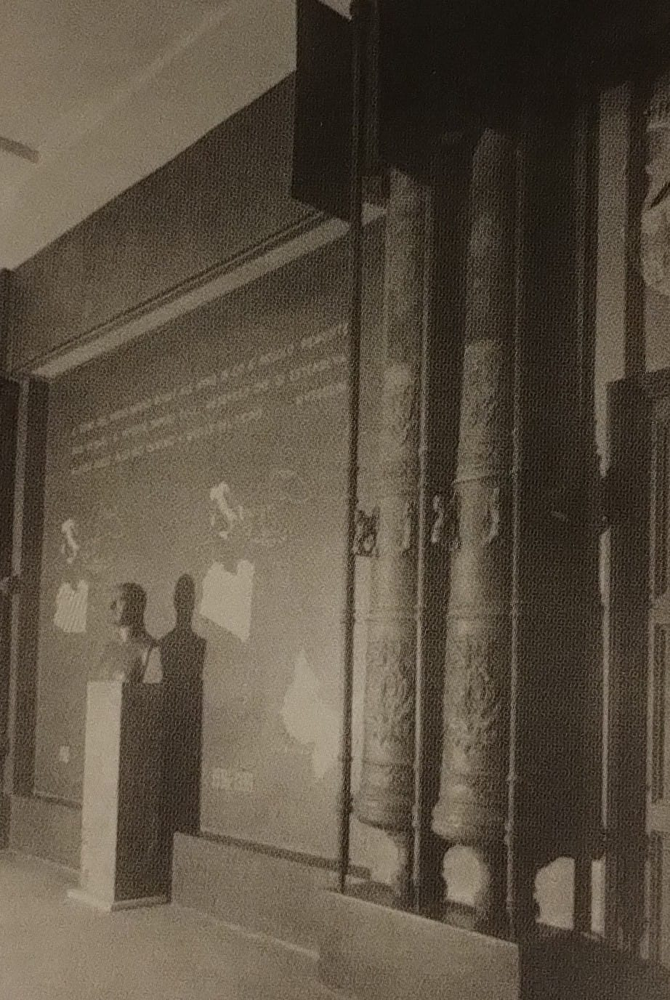
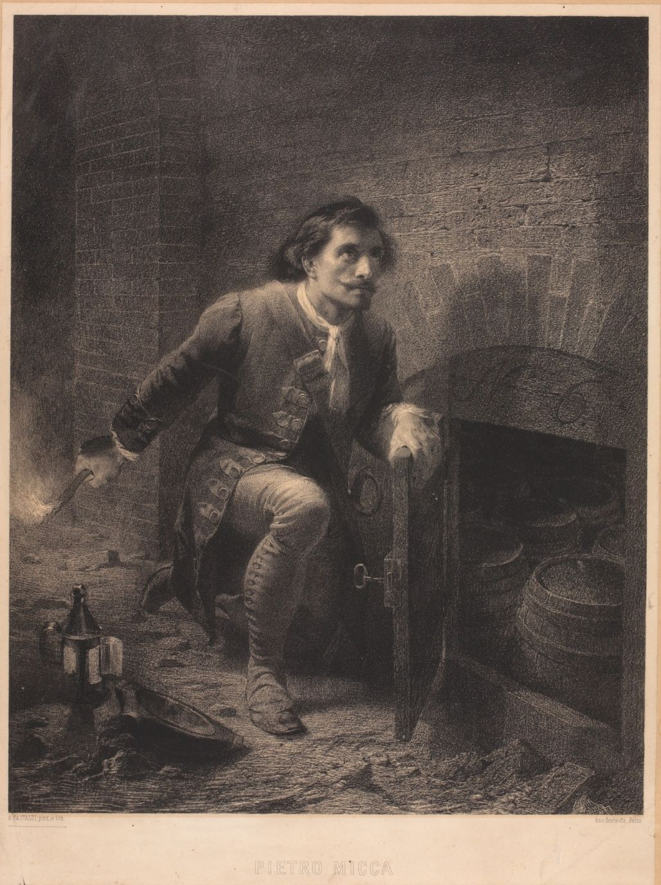

Il Museo nel 1938
Il Museo del Risorgimento inaugurò la nuova sede di Palazzo Carignano nel 1938. In quell'anno, il regime fascista impose una specifica rilettura politica della storia nazionale. Questa interpretazione escludeva i movimenti europei per presentare un cammino del tutto autoctono.
La propaganda metteva al centro Casa Savoia e la sua antica missione nazionale. I cittadini dovevano ispirarsi al senso del dovere e al coraggio della dinastia sabauda.
La cronologia del Risorgimento, esposta a sinistra del dipinto della battaglia di Torino, e i calchi dei cannoni della cittadella testimoniano una precisa visione politica. Il regime fascista, nell'allestimento del 1938, riscrive la storia nazionale per celebrare il coraggio e il senso del dovere militare.
La cronologia fa iniziare il cammino dell'unità nel 1706 con l'assedio francese di Torino. Questo percorso giunge senza sosta fino all'Impero fascista. I calchi dei cannoni, vicini ai guerrieri medievali, esaltano la forza guerriera dei Savoia. Il visitatore può riscoprire come la propaganda abbia trasformato la memoria storica in un simbolo di potenza.


Il dipinto della Battaglia di Torino mostra l'assedio del 1706. I cittadini resistettero per mesi alla fame e ai bombardamenti francesi per difendere la propria libertà. L'esercito austro-sabaudo liberò infine la città il 7 settembre con uno scontro campale.
La litografia in bianco e nero di Andrea Gastaldi celebra il sacrificio di Pietro Micca. Questo minatore diede fuoco alle polveri per bloccare i nemici nelle gallerie sotterranee. Egli perse la vita nell'esplosione ma salvò la patria.
I pittori Luigi e Antonio Rigorini realizzarono questa monumentale tela nel 1938. Questa tela sostituisce il dipinto originale di Parrocel, restituito all'Austria nel 1939. L'opera ci permette oggi di riscoprire quel coraggio antico.


Scorri la Linea del Tempo!
Scorri la linea del tempo per scoprire le tappe che hanno segnato la storia del Museo Nazionale del Risorgimento Italiano.
Unificazione del Regno d'Italia
Il 17 marzo 1861 il Parlamento riunito a Palazzo Carignano proclama il Regno d'Italia. Vittorio Emanuele II diventa il primo re.
La donazione dei cimeli di Vittorio Emanuele II alla città di Torino
Alla morte del re, i suoi cimeli vengono donati a Torino dal figlio Umberto I. È il primo nucleo delle collezioni che daranno vita al Museo.
Esposizione Generale Italiana
Torino ospita l'Esposizione Generale Italiana: una sezione è dedicata alla storia del Risorgimento e raccoglie cimeli da tutta la penisola con un racconto nazional popolare.
Cinquantenario dello Statuto Albertino
Per i cinquant'anni dello Statuto concesso da Carlo Alberto, Torino celebra il Risorgimento con una grande mostra commemorativa.
Inaugurazione del Museo presso la Mole
Il Museo Nazionale del Risorgimento apre le sue porte nella Mole Antonelliana, allora destinata a ospitare le collezioni.
Cinquantenario dell'Unità d'Italia'
Per i cinquant'anni dell'Unità d'Italia, Torino celebra il Risorgimento con una grande mostra al Palazzo del Giornale. L'esposizione evidenzia il nesso tra il Risorgimento e lo sviluppo industriale di Torino.
Mostra Storica in Palazzo Carignano
Palazzo Carignano ospita una mostra storica dedicata al Risorgimento.
Il Museo si trasferisce a Palazzo Carignano
Per problemi strutturali della Mole Antonelliana, il Museo è costretto a cambiare sede. Dopo diversi spostamenti, le collezioni trovano collocazione definitiva a Palazzo Carignano, sede del primo Parlamento italiano.